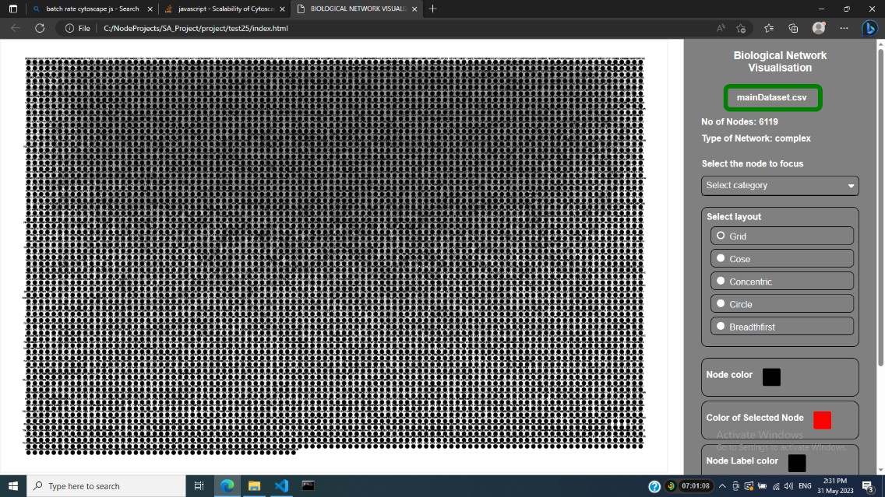
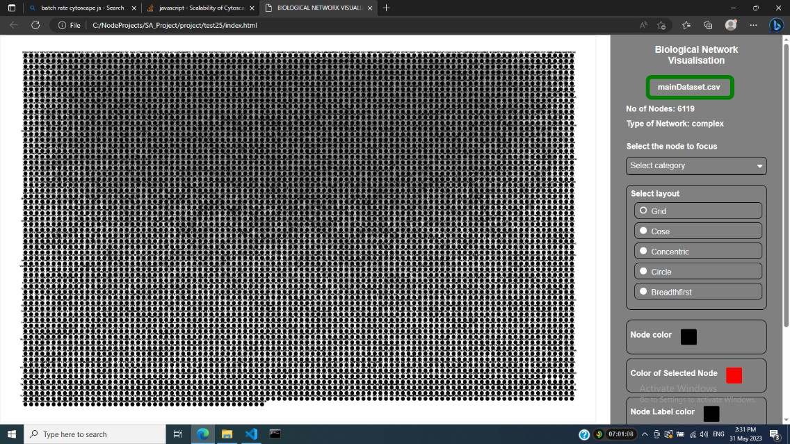
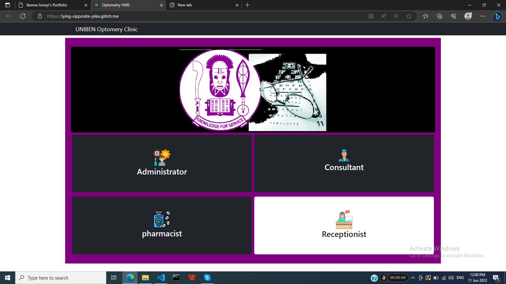
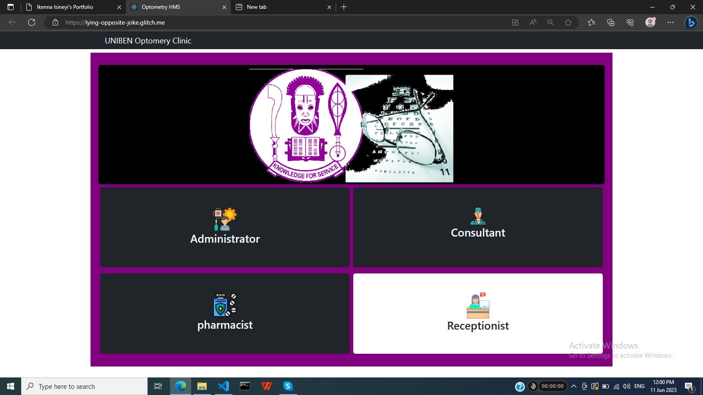

Ikenna Patrick Isineyi | Fullstack developer | NodeJs | Reactjs | MongoDB
Reactjs, Nodejs, Expressjs, Material-UI, Reduxjs, HTML, CSS, Sass, Javascript, MySQL,
MongoDB, SQLite, Git, Code review, code optimisation
About me
A fullstack developer with a Bachelor of Computer Science from University of Benin, Nigeria,
and I have worked as a fullstack developer for over 4 years, including at least 3 years as a
freelancer. Been building fullstack systems since 2019. My main passion is taking ownership of and
building different kinds of web applications using web technologies such as HTML, CSS, Javascript,
Reactjs, Nodejs, SQL, and MongoDB. While I may be a very independent developer, teams make
everything easier. In every project, my top priorities are effieciency and customer satisfaction.
I adapt to the requirements of each project because every project is unique. I
have worked on a range of projects, which you will see below. Most of my projects
were not listed because of NDA.
My Projects
Project Management Groupware
A portal for creating and managing projects in an organisation. Built with Reactjs, Nodejs,Expressjs, Reduxjs, Material-UI, MongoDB. The admin can create account for staff, create project groups and assign tasks to staff. The system also manages the contacts of clients and the user can email clients directly from the system.
A portal for creating and managing projects in an organisation. Built with Reactjs, Nodejs,Expressjs, Reduxjs, Material-UI, MongoDB. The admin can create account for staff, create project groups and assign tasks to staff. The system also manages the contacts of clients and the user can email clients directly from the system.
Cytoscape Graph Rendering
Renders the nodes and edges of a graph from a dataset of 3 columns, where the 3rd column is a number. Built with only vanilla Javascript, HTML and CSS. Processes only plain text files such as csv and txt files. This portal uses Cytoscapejs to do the rendering. Papaparse is used to parse the files. User can customise the graph via the options on the side bar. 
Renders the nodes and edges of a graph from a dataset of 3 columns, where the 3rd column is a number. Built with only vanilla Javascript, HTML and CSS. Processes only plain text files such as csv and txt files. This portal uses Cytoscapejs to do the rendering. Papaparse is used to parse the files. User can customise the graph via the options on the side bar. 
Sports Connect Site (MongoDB version)
A web application designed to allow users to find other users with mutual sports interest. Built with Reactjs, NodeJs, Expressjs, Reduxjs,and MongoDB.

A web application designed to allow users to find other users with mutual sports interest. Built with Reactjs, NodeJs, Expressjs, Reduxjs,and MongoDB.
Sports Connect Site (SQL version)
A web application designed to allow users to find other users with mutual sports interest. Built with Reactjs, NodeJs, Expressjs, Reduxjs,and SQLite.
A web application designed to allow users to find other users with mutual sports interest. Built with Reactjs, NodeJs, Expressjs, Reduxjs,and SQLite.
Hospital Management System
A portal the administration of a hospital. Built with Reactjs, Nodejs, Expressjs, Reduxjs, react-bootstrap, and MySQL. The system is used by 4 categories of users: administrators, consultants, pharmacists, and receptionist. Each of these have access to unique views and features as allowed by their job descriptions. The default username is admin and the password is admin. These can be changed from within the system 
A portal the administration of a hospital. Built with Reactjs, Nodejs, Expressjs, Reduxjs, react-bootstrap, and MySQL. The system is used by 4 categories of users: administrators, consultants, pharmacists, and receptionist. Each of these have access to unique views and features as allowed by their job descriptions. The default username is admin and the password is admin. These can be changed from within the system 
Examination Timetable Generating System
A system that automatically generates the 1st and 2nd semester examination timetable for a department using the courses offered in those semesters. Built with Reactjs, Nodejs, Expressjs, SQLite, react-bootstrap, and reduxjs. Default username is admin and default password is admin. These should be changed during setup.
A system that automatically generates the 1st and 2nd semester examination timetable for a department using the courses offered in those semesters. Built with Reactjs, Nodejs, Expressjs, SQLite, react-bootstrap, and reduxjs. Default username is admin and default password is admin. These should be changed during setup.
Result Processing System
An android app that takes the scores of students as input and generates the semester result and outputs it in a well formatted Excel file. Built with Flutter. It has been years I worked with Flutter so the app has not been maintained and the backend may be dead.
An android app that takes the scores of students as input and generates the semester result and outputs it in a well formatted Excel file. Built with Flutter. It has been years I worked with Flutter so the app has not been maintained and the backend may be dead.
Event Management System
An Android app that allows anyone who needs an event planner to find one within their neighborhood. Built with Flutter, Python, and MySQL. This was inspired by ride hailing applications. It has been years I worked with Flutter so the app has not been maintained and the backend may be dead.
An Android app that allows anyone who needs an event planner to find one within their neighborhood. Built with Flutter, Python, and MySQL. This was inspired by ride hailing applications. It has been years I worked with Flutter so the app has not been maintained and the backend may be dead.
E-commerce Site
A personal e-commerce platform that has been left uncompleted because I got a job and have very litte time to continue with it. Built with Reactjs, NodeJs, Expressjs, Reduxjs,and MongoDB.
A personal e-commerce platform that has been left uncompleted because I got a job and have very litte time to continue with it. Built with Reactjs, NodeJs, Expressjs, Reduxjs,and MongoDB.